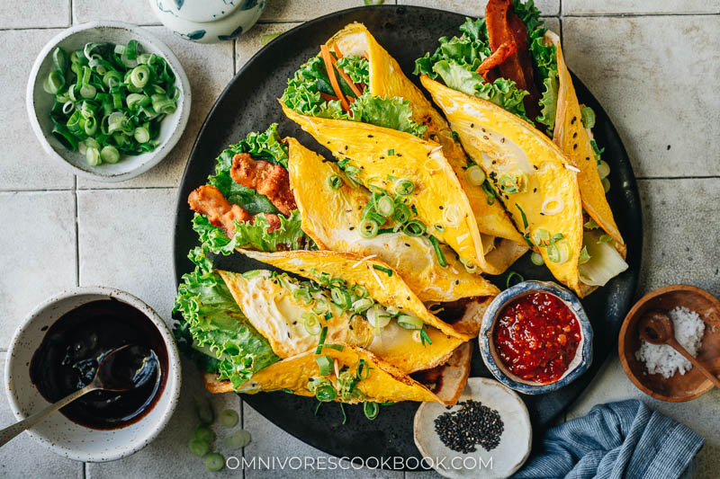

Ji Dan Bing

Description
Ji Dan Bing, or Chinese breakfast pancake, is a thin flour pancake cooked with a slightly scrambled egg, green onion and sesame, brushed with a sweet savory sauce. Top it with lettuce, veggies or bacon so it contains all of your favorite breakfast items in one wrap! It’s easy to put together, super hearty to eat, and beautiful to the eyes. Perfect for Sunday brunch or celebrating Mother’s Day.
Ingredients
Egg Pancakes
- 150 g (1 cup) all-purpose flour
- 1/2 teaspoon salt
- 255 ml (1 cup + 1 tablespoon) water
- 3 green onions , sliced
- 1 tablespoon peanut oil (or melted butter)
- Oil spray , for cooking
- 4 eggs
- Toasted black sesame seeds , for garnish
- Sweet bean sauce (or hoisin sauce)
Optional Toppings
- Chili garlic sauce , for spiciness if preferred (Optional)
- 6 pieces green leaf (or romaine lettuce)
- 6 hot dogs , pan fried (or bacon strips)
- Shredded carrots and cucumber
- Sliced green onions , for garnish
Instructions
- Combine the all-purpose flour and salt in a medium size bowl. Stir a few times to mix well. Slowly pour in the water while mixing, until it forms a smooth, runny batter. Add the peanut oil. Mix until fully incorporated. The batter should be quite runny, but not as runny as a crepe batter.
- Spray (or drizzle) a very small amount of oil onto a medium-sized or small nonstick skillet. Use paper towels to wipe the pan so the oil is very thinly coated. Heat over medium heat until just hot and not smoking hot.
- Add about 1/3 cup of the batter to the pan. Immediately swirl the pan so the batter will spread out evenly into a thin round shaped pancake.
- When the pancake is just set, crack an egg onto the center of it. Use a spoon to break the egg and spread it over the pancake. When the egg is still runny, sprinkle it with green onion and black sesame seeds. Cook over medium-low heat until the egg is mostly set and the bottom of the pancake just turns golden on the edges. Carefully flip the pancake. Cook for 20 to 30 seconds, until the egg is fully cooked. Transfer the pancake to a plate. Keep cooking the rest of the pancakes. Note, you might need to lower the heat while making the rest of the pancakes or remove the pan from the heat occasionally when adding the batter. If the pan gets too hot, the batter will set too quickly and will be difficult to spread out into a thin pancake.
To Serve
- Brush the pancake with a thin layer of the sweet bean sauce (or hoisin sauce). You can add some chili garlic sauce if you prefer.
- The pancakes can be served as is. For a more filling meal, top with other ingredients such as lettuce leaves, hot dogs, bacon, carrots and / or cucumber. Garnish with extra green onion. Roll up and enjoy!